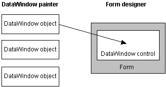
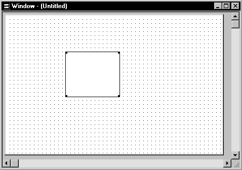

This section has information about:
- Names for DataWindow controls and DataWindow objects
- Procedures for inserting a control and assigning a DataWindow object to the control
- Specifying the DataWindow object during execution
For information about assigning a DataWindow object to a Web DataWindow control, see Working with Web and JSP Targets or "Loading the DataWindow object".
For information about assigning a DataWindow object to a Web control for ActiveX, see "Specifying a DataWindow object for the control".
Names for DataWindow controls and DataWindow objects
There are two names to be aware of when you are working with a DataWindow:
- The name of the DataWindow control
- The name of the DataWindow object associated with the control
The DataWindow control name When you place a DataWindow control in a window or form, it gets a default name. You should change the name to be something meaningful for your application.
In PowerBuilder, the name of the control has traditionally had a prefix of dw_. This is a useful convention to observe in any development environment. For example, if the DataWindow control lists customers, you might want to name it dw_customer.
 Using the name In code, always refer to a DataWindow by the name of the control (such
as dw_customer). Do not refer to the DataWindow object that
is in the control.
Using the name In code, always refer to a DataWindow by the name of the control (such
as dw_customer). Do not refer to the DataWindow object that
is in the control.
The DataWindow object name To avoid confusion, you should use different prefixes for DataWindow objects and DataWindow controls. The prefix d_ is commonly used for DataWindow objects. For example, if the name of the DataWindow control is dw_customer, you might want to name the corresponding DataWindow object d_customer.
Working with the DataWindow control in PowerBuilder
 To place a DataWindow control in a window:
To place a DataWindow control in a window:
Open the window that will contain the DataWindow control.
Select Insert>Control>DataWindow from the menu bar.
Click where you want the control to display.
PowerBuilder places an empty DataWindow control in the window:

(Optional) Resize the DataWindow control by selecting it and dragging one of the handles.
Specifying a DataWindow object
After placing the DataWindow control, you associate a DataWindow object with the control.
 To associate a DataWindow object with the control:
To associate a DataWindow object with the control:
In the DataWindow Properties view, click the Browse button for the DataObject property.
Select the DataWindow object that you want to place in the control and click OK.
The name of the DataWindow object displays in the DataObject box in the DataWindow Properties view.
(Optional) Change the properties of the DataWindow control as needed.
 Allowing users to move DataWindow controls If you want users to be able to move a DataWindow control
during execution, give it a title and select the Title Bar check
box. Then users can move the control by dragging the title bar.
Allowing users to move DataWindow controls If you want users to be able to move a DataWindow control
during execution, give it a title and select the Title Bar check
box. Then users can move the control by dragging the title bar.
Defining reusable DataWindow controls
You might want all the DataWindow controls in your application to have similar appearance and behavior. For example, you might want all of them to do the same error handling.
To be able to define these behaviors once and reuse them in each window, you should create a standard user object based on the DataWindow control: define the user object's properties and write scripts that perform the generic processing you want, such as error handling. Then place the user object (instead of a new DataWindow control) in the window. The DataWindow user object has all the desired functionality predefined. You do not need to respecify it.
For more information about creating and using user objects, see the PowerBuilder User's Guide .
Editing the DataWindow object in the control
Once you have associated a DataWindow object with a DataWindow control in a window, you can go directly to the DataWindow painter to edit the associated DataWindow object.
 To edit an associated DataWindow object:
To edit an associated DataWindow object:
Select Modify DataWindow from the DataWindow control's pop-up menu.
PowerBuilder opens the associated DataWindow object in the DataWindow painter.
Specifying the DataWindow object during execution
Changing the DataWindow object
The way to change the DataWindow object depends on the environment:
- PowerBuilder Set the DataObject property to one of the DataWindow objects built into the application.
- Web ActiveX Set the SourceFileName and DataWindowObject properties to select a new library file and DataWindow.
- Web DataWindow If you are not using the Web Target object model, you can call the SetDWObject method on the Web DataWindow generator component.
 Setting the transaction object when you change the
DataWindow object When you change the DataWindow object during execution, you
might need to call setTrans or setTransObject again.
Setting the transaction object when you change the
DataWindow object When you change the DataWindow object during execution, you
might need to call setTrans or setTransObject again.
Dynamically creating a DataWindow object
You can also create a new DataWindow object during execution and associate it with a control.
For more information, see Chapter 3, "Dynamically Changing DataWindow Objects ."
Changing the DataWindow in PowerBuilder
When you associate a DataWindow object with a control in the window, you are setting the initial value of the DataWindow control's DataObject property.
During execution, this tells your application to create an instance of the DataWindow object specified in the control's DataObject property and use it in the control.
Setting the DataObject property in code
In addition to specifying the DataWindow object in the Window painter, you can switch the object that displays in the control during execution by changing the value of the DataObject property in code.
For example: to display the DataWindow object d_emp_hist from the library emp.pbl in the DataWindow control dw_emp, you can code:
dw_emp.DataObject = "d_emp_hist"
The DataWindow object d_emp_hist was created in the DataWindow painter and stored in a library on the application search path. The control dw_emp is contained in the window and is saved as part of the window definition.
 Preventing redrawing You can use the SetRedraw method to turn off redrawing in
order to avoid flicker and reduce redrawing time when you are making
several changes to the properties of an object or control. Dynamically
changing the DataWindow object at execution time implicitly turns
redrawing on. To turn redrawing off again, call the SetRedraw method
every time you change the DataWindow object:
Preventing redrawing You can use the SetRedraw method to turn off redrawing in
order to avoid flicker and reduce redrawing time when you are making
several changes to the properties of an object or control. Dynamically
changing the DataWindow object at execution time implicitly turns
redrawing on. To turn redrawing off again, call the SetRedraw method
every time you change the DataWindow object:
dw_emp.DataObject = "d_emp_hist"
dw_emp.SetRedraw(FALSE)
Using PSR files
To put a PSR file into a DataWindow control at execution time, change the control's DataObject property to specify that PSR file name.
Changing the DataWindow in the Web ActiveX
When you associate a DataWindow object with a DataWindow control, you are setting the initial value of the DataWindow control's SourceFileName and DataWindowObject properties.
During execution, this tells your application to:
- Look for DataWindow objects in the library (PBL file) or runtime library (PBD file) specified in the control's SourceFileName property.
- Create an instance of the DataWindow object specified in the control's DataWindowObject property (which must be in the specified library) and use it in the control.
Setting the SourceFileName and DataWindowObject properties in code
In addition to specifying the DataWindow object in the Window painter, you can switch the object that displays in the control during execution by changing the value of the SourceFileName and DataWindowObject properties in code.
You might simply change the DataWindowObject property to use a different DataWindow object from the same library, or you might change both properties to use a DataWindow object from some other library.
For information about URLs for SourceFileName, see "Specifying a DataWindow object for the control".
For more information about the SourceFileName and DataWindowObject properties, see the DataWindow Reference .
Using PSR files If you want to dynamically put a PSR file into a DataWindow control at execution time, change the control's SourceFileName property to an empty string and specify a URL for the PSR file as the value for the DataWindowObject property.
Examples
This example shows the code to set the properties in JavaScript. The code changes the DataWindow object in dw_emp, a DataWindow control in a form or Web page. Dw_emp is saved as part of the form or Web page definition. The value for DataWindowObject is d_emp_hist; it was created in the DataWindow painter and is stored in the library named emp.pbl, the value for SourceFileName.
Web ActiveX For the Web ActiveX on a Web page, you set the SourceFileName and DataWindowObject properties directly.
To display the DataWindow object d_emp_hist from the library emp.pbl in the DataWindow control dw_emp, you can code:
dw_emp.SourceFileName = "dwlibs/emp.pbl";
dw_emp.DataWindowObject = "d_emp_hist";